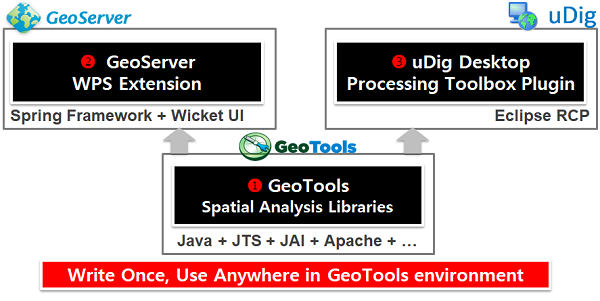

OpenGXT Documentation¶
OGC 국제표준과 Open Source GIS에 기반하여 개발한 공간(통계)분석 엔진으로 3개의 프로젝트로 구성되어 있습니다.
GeoTools 기반의 공간(통계)분석 Library
GeoServer OGC WPS 지원 공간분석 Service Extension
uDig 기반의 공간분석 Processing Toolbox Plugin
OpenGXT는 오픈소스로 공개되어 있으며 GitHub에서 확인이 가능합니다.
